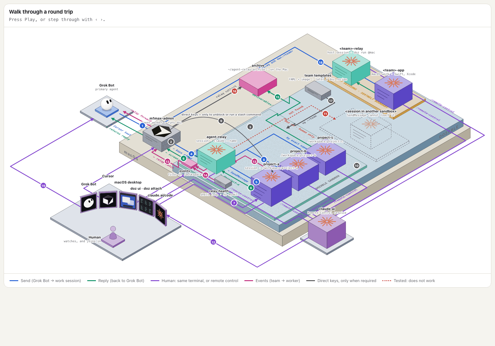
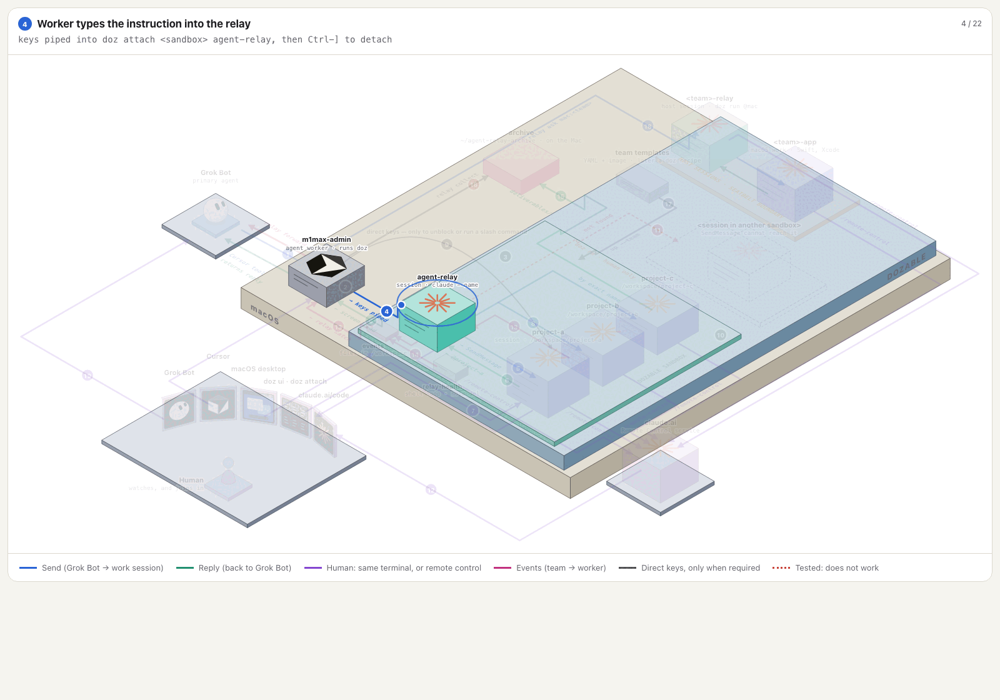
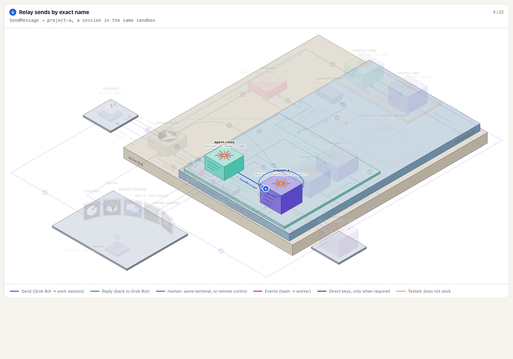
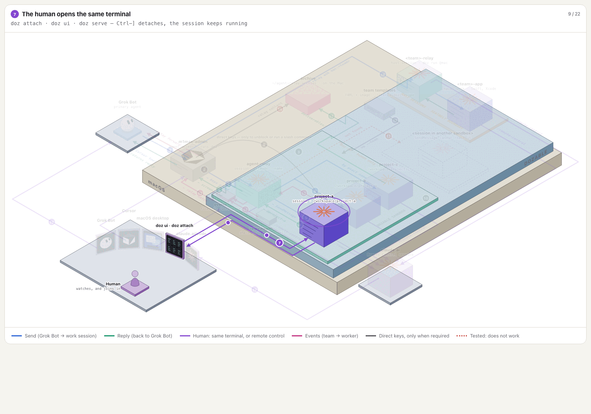
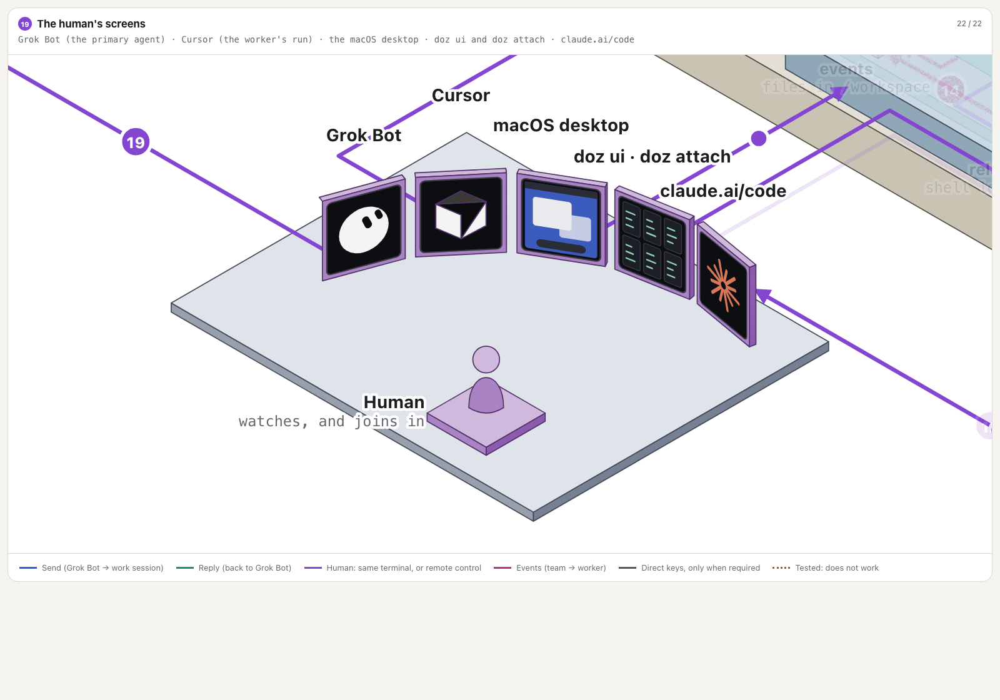

Working together with Grok Bot in a Claude Code session, enabled by Dozable
Claude Code superpowers granted to your Grok Bots.
I quickly fell for Grok Bot's charm and capabilities. From marketing to product management (I even have a librarian), my bots handle their daily duties well, and I now rely on them. But they can't design, and they can't code! At least not to the level I reliably get from Claude Code.
So I decided they should be able to delegate that work to Claude Code on my Mac, using my own subscription, just like I do. If all you want is command-line access, that's easy to set up in the Grok Bot app on your computer. The hard part came when I realised what I really wanted was for Grok Bot and me to work together in Claude Code.
The goal was to give each of my Grok Bots its own Claude Code workspaces on my own Macs, so the bots and the people on my team can work together in them. The bots do the delegated work in their sessions. A person keeps full visibility of every session, and can watch one or jump in and type whenever they need to.
I run Grok Bots with company roles. One of them, Cheto, is my CTO bot. A bot's workspaces are long-lived Claude Code sessions on a Mac, one per workstream. For this to work, the bot has to be able to hand work to its own sessions and read the answers, without ever taking a session away from the person at the keyboard.
That turned out to be two separate problems: how a bot gets a message into a session that is already running, and how the reply gets back out. This post covers what I tried, what worked, and the part that still doesn't.

The pictures in this post are frames of an interactive diagram of the setup. A public page for the interactive version is not up yet, so the post uses the stills only.
The problem#
The obvious approach failed first. On the Claude Code version I had (2.1.321), there was no claude send command. Resuming a running background session with --resume and extra flags didn't continue it. It started a copy with a new ID. So "stop the session, resume it with the next instruction" was the only way to deliver a message, and that is clumsy. It also put the session's context at risk every time.
Permissions caused the second problem. I ran my delegated sessions with permission prompts skipped. When a sender that wasn't in that mode messaged one of those sessions, Claude Code held the message on a Deny / Deliver prompt. In a background session with no terminal attached, nobody sees that prompt. In my probe it was still waiting about four minutes later. That explained a run of approval requests I had been seeing.
There's a third, quieter problem. A background session that asks a question has no terminal to ask it in, so it sits there, blocked.
What worked#
The fix was to give the bot the ability to use Claude's peer session messaging. This is a very cool feature that lets Claude sessions talk to each other. But it's only Claude to Claude, which meant giving the bot its own Claude session to pass messages to the working Claude (which can also message back), like a relay.
The relay is a long-lived Claude session that runs in the background, and it starts from a scratch directory rather than a work repo. Its only job is to send messages to work sessions and print what comes back. One relay can support all the Claude sessions that the bot is running.
Sending uses Claude Code's own cross-session messaging. Inside the relay, Claude uses its built-in SendMessage tool to reach a work session. I address the target by its exact session name. In my probe, the short IDs that claude agents prints didn't match as addresses, and names stayed stable when processes were respawned. A reply arrives in the relay labelled Message from @<sender-name>. Claude Code's cross-session messaging docs describe the same tools, ListAgents and SendMessage, and the same "Message from @name" preview.
The two frames below are from the later diagram, not from the 10 November probe. They show the worker typing the instruction into the relay, then the relay sending by exact name.


Matching permission modes avoids the held-message prompt. With both ends skipping permission prompts, messages were delivered with no approval prompt. The docs describe the default rule: a session that bypasses prompts holds messages from a session that doesn't. A receiver started with crossSessionInbound set to accept admitted a non-bypass sender in my probe. I haven't applied that setting to a real work session.
Skipping permission prompts is a trade-off, not a recipe. With prompts off, a session acts without asking. I accepted that for disposable probe sessions in a scratch directory on a machine I control. For real work, the plan relies on other limits instead: a scoped brief, isolated worktrees, pull-request review, and stopping a session when needed. If those limits aren't in place, don't copy this setting.
Later messages go in by attaching to the relay and typing. This was the missing piece. On the evening of 10 November I started a throwaway relay and a throwaway receiver, then left both idle. A small expect script ran claude attach on the relay and typed one line: SEND R1. The relay sent the message, the receiver acknowledged it, and the reply showed up on the attached screen. I then did the same for SEND R2 and SEND R3. Each line went in only after the previous reply had printed. The process IDs didn't change across the three rounds, and nothing was restarted or resumed. From typing a line to seeing the reply took about 29, 15 and 18 seconds.
The human path is separate. A person's way in doesn't go through the bot or the relay. Claude Code documents claude attach <session> for opening a background session in a terminal, and detaching leaves the session running. Cheto's path and a person's are designed to meet only at the work session.

The bot reaches the Mac through a Cursor worker. For this workflow, Cheto reaches the Mac through a Cursor agent running there as a My Machines worker. Cursor's docs describe the split: the agent loop runs in Cursor's cloud, and terminal commands and file edits run on your machine over an outbound connection. That worker runs the claude commands. It checks what's running with claude agents --json --all, attaches to the relay to type, and reads replies with claude logs when nobody is attached. The plan keeps supervision of real work in GitHub: delegated sessions open draft pull requests, and Cheto reviews those through the GitHub connector instead of pulling transcripts off the Mac.
Why this is interesting#
- No new plumbing on the Claude side. The relay is an ordinary Claude Code session using a built-in tool. I didn't add a server or a custom protocol.
- A bot and a person each have their own way in. That is what keeps the person's visibility intact: the bot doesn't need the person's terminal, and the person doesn't need the bot to see or type into a session. I haven't tested whether both can use the same session at the same moment.
- Supervision stays readable. In the plan, the record of real work is a draft pull request checked against acceptance criteria, not a scrape of a terminal.
Limits, plainly#
What I have proved is narrow: repeated exchanges between one relay and one receiver, on throwaway sessions, on one Mac and one Claude Code version (2.1.322). The real work session in the diagram wasn't messaged. These things are not proved:
- Return notifications. Nothing in the tested path wakes an idle Cursor worker or Cheto when a reply arrives. Something still has to attach or poll. A local hook on a separate relay did record unsolicited incoming messages to a file, but it notified no one. A webhook routine for a return bridge has been prepared. It isn't connected, it hasn't been live-tested, and it still needs its endpoint and a securely supplied key.
- Routing to a second work session. A retarget line to a second receiver never became a turn in the relay.
- A human attaching while the relay is messaging the same session. Not part of the 10 November probe. The demonstration below is a later account, from a transcript, and it is not a re-run of that probe.
- The typing script as a bridge. The terminal UI breaks words up on screen, so the script's simple text matching didn't work reliably. It was good enough for a probe and isn't a deployed integration.
Claude Code is also moving quickly. Its current docs describe other routes I haven't tried in this setup: replying from agent view's peek panel, resuming a running session with a prompt, an idle notification option on SendMessage, and channels for pushing events into a session. Some of these may make parts of this setup simpler, or unnecessary. I'll test them before I say so.
So the 10 November probe is a narrow result, not a deployed system. It proved that a bot can hold a repeated exchange with a running session through a relay. A human attaching is a separate, documented way in. On that probe, using both on the same session at the same time, and getting a reply back to the bot without polling, were still untested.
Showing it to a new team member#
On Friday 13 November 2026, in Sydney, I showed this setup to a new team member and used it for real. The quotes below come from a call transcript received at 13:04 Australia/Sydney. The transcription may be imperfect. These are lightly edited quotes. They have not yet been checked by the speaker:
"this is really using it for real, right? So this sandbox is running. You can see there's three. So these are three sessions, three Claude sessions."
"see these messages here? ... these are from Grok bot."
"Sending the messages."
"So I can see them. I can jump in and interact. I've got full visibility and it's all kind of packaged in these sandboxes that are templated. So if the bot needs to spin up an environment for Remotion, it can do it really quickly."

How this relates to Dozable#
Dozable is what makes the goal practical: each bot's Claude Code sessions run in templated sandboxes on my Macs, so a bot can have its own workspaces and a person can still see all of them. The same shape is in the setup I use now. Bots send prompts into live Claude Code sessions through Dozable's relay, and the prompts are typed into the session. Dozable holds the terminal, so several clients can attach to one session with doz attach. A person can watch live, and a watcher is not a reason for the bot to stop. If a person types, the bot yields and does not overwrite text it did not write. A Cursor worker handles the repository work. Approvals stay with a person. The setup also names a Remotion sandbox, m3-remotion, on m1max3. The speed in the quote is about a templated Remotion environment. This post is not adding a separate claim about how fast that named sandbox booted.
About Dozable#
Dozable gives each coding agent its own small Linux computer on your Mac, so you can let it work. A sandbox starts in about a third of a second, and your API keys stay on the Mac. Try it at dozable.com.